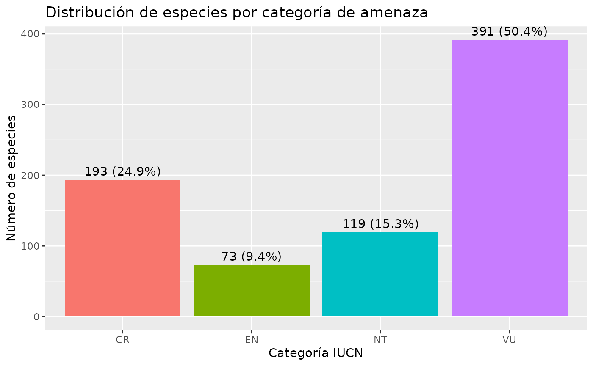
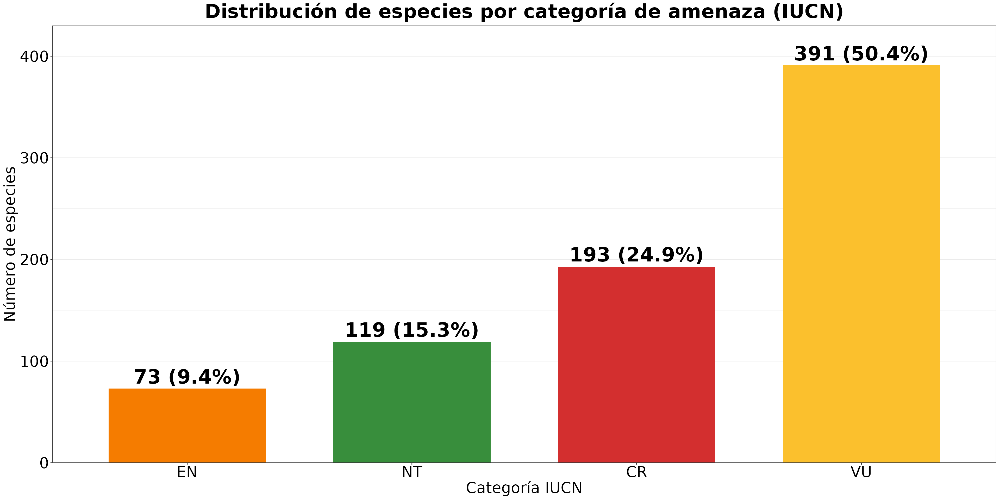

Exploración de la Base de Datos `threatenedperu`
Paul E. Santos Andrade
2025-11-24
Source:vignettes/threatenedperu_overview.Rmd
threatenedperu_overview.RmdIntroducción
La base de datos threatenedperu incluida en el paquete
peruflorads43 contiene la lista oficial de especies de
plantas amenazadas del Perú según el Decreto Supremo N°
043-2006-AG y su actualización taxonómica utilizando la
información de Plants of the World Online (POWO) del
Royal Botanic Gardens, Kew.
Carga del conjunto de datos
threatenedperu <- get_threatened_database(type = "original")El objeto threatenedperu es un tibble con 776 registros y 13 columnas, estructurado de la siguiente manera:
| Tipo de columna | Variables principales | Descripción |
|---|---|---|
| Datos originales (DS 043-2006-AG) |
scientific_name, author,
family, threat_category, genus,
species, infraspecies, tag,
infraspecies_2
|
Información original del listado de especies amenazadas publicado en 2006. |
| Datos actualizados (POWO) |
accepted_name, accepted_name_author,
accepted_family, taxonomic_status
|
Información validada con taxonomía actualizada según POWO. |
Revisión de escritura y normalización
Durante la depuración se realizaron las siguientes acciones:
Corrección de errores tipográficos en nombres científicos y autores.
Homogeneización de abreviaturas de autores.
Normalización de mayúsculas en géneros y epítetos.
Eliminación de espacios dobles y caracteres especiales.
Ejemplo comparativo de los de errores tipográficos en nombres científicos:
threatenedperu |>
dplyr::mutate(compara = scientific_name != accepted_name) |>
dplyr::mutate(
# Calcula la distancia solo cuando los nombres difieren
string_distance = ifelse(
compara,
stringdist::stringdist(scientific_name, accepted_name, method = "lv"), # 'lv' = Levenshtein
0
)
) |>
dplyr::filter(string_distance > 0 & string_distance < 3) |>
dplyr::select(scientific_name, accepted_name, string_distance) |>
gt::gt()| scientific_name | accepted_name | string_distance |
|---|---|---|
| Ascidiogine wurdackii | Ascidiogyne wurdackii | 1 |
| Onoseris chrysactinioides | Onoseris chrysactinoides | 1 |
| Otholobium munyensis | Otholobium munyense | 2 |
| Proboscidea altheaefolia | Proboscidea althaeifolia | 2 |
| Jaltomata mioneii | Jaltomata mionei | 1 |
| Solanum chuquidenum | Solanum chiquidenum | 1 |
| Begonia octopetala subsp. ovatoformis | Begonia octopetala subsp. ovatiformis | 1 |
| Nototriche pseudo-pichinchensis | Nototriche pseudopichinchensis | 1 |
| Nototriche tovari | Nototriche tovarii | 1 |
| Mutisia wurdacki | Mutisia wurdackii | 1 |
| Parastrephia phylicaeformis | Parastrephia phyliciformis | 2 |
| Senecio violaefolius | Senecio violifolius | 2 |
| Cyathostegia mathewsii | Cyathostegia matthewsii | 1 |
| Pachyrrhizus tuberosus | Pachyrhizus tuberosus | 1 |
| Peltogyne altisima | Peltogyne altissima | 1 |
| Aniba rosaeodora | Aniba rosodora | 2 |
| Acaulimalva parnassiaefolia | Acaulimalva parnassiifolia | 2 |
| Solanum huancabambese | Solanum huancabambense | 1 |
| Solanum rachialatum | Solanum raquialatum | 2 |
| Hesperoxiphion pardale | Hesperoxiphion pardalis | 2 |
| Salvia opossitiflora | Salvia oppositiflora | 2 |
| Cycnoches peruviana | Cycnoches peruvianum | 2 |
| Masdevallia zebraceae | Masdevallia zebracea | 1 |
| Telipogon alegria | Telipogon alegriae | 1 |
| Aspasia psitticina | Aspasia psittacina | 1 |
| Epidendrum micro-cattleya | Epidendrum microcattleya | 1 |
| Gongora quinquinervis | Gongora quinquenervis | 1 |
| Masdevallia andreettaeana | Masdevallia andreettana | 2 |
| Maxillaria rotumdilabia | Maxillaria rotundilabia | 1 |
| Miltoniopsis bismarkii | Miltoniopsis bismarckii | 1 |
| Mormodes rolfeanum | Mormodes rolfeana | 2 |
| Psychopsis versteegianum | Psychopsis versteegiana | 2 |
| Rodriguezia bockii | Rodriguezia bockiae | 2 |
| Stanhopea haselowiana | Stanhopea haseloffiana | 2 |
| Stanhopea jenishiana | Stanhopea jenischiana | 1 |
| Trichopilia fragans | Trichopilia fragrans | 1 |
| Trichopilia juninense | Trichopilia juninensis | 2 |
| Zygopetalum labiosum | Zygosepalum labiosum | 2 |
| Myrosmodes nubigenum | Myrosmodes nubigena | 2 |
| Myrosmodes paludosum | Myrosmodes paludosa | 2 |
| Cumulopuntia sphaericus | Cumulopuntia sphaerica | 2 |
| Matucana haynei | Matucana haynii | 1 |
Variable taxonomic_status
Esta variable describe la relación entre el nombre original y su estado taxonómico según POWO:
“Accepted” El nombre original se mantiene vigente.
“Synonym” El nombre original fue reemplazado por otro aceptado.
“No opinion” No se dispone de información actual o existe ambigüedad taxonómica.
Ejemplos de cada categoría:
# Nombres aceptados
threatenedperu |>
filter(taxonomic_status == "Accepted") |>
select(scientific_name, accepted_name) |>
slice_head(n = 5)
#> # A tibble: 5 × 2
#> scientific_name accepted_name
#> <chr> <chr>
#> 1 Aphelandra cuscoensis Aphelandra cuscoensis
#> 2 Aphelandra formosa Aphelandra formosa
#> 3 Aphelandra wurdackii Aphelandra wurdackii
#> 4 Tetramerium sagasteguianum Tetramerium sagasteguianum
#> 5 Rauhia decora Rauhia decora
#Nombres sinónimos
threatenedperu |>
filter(taxonomic_status == "Synonym") |>
select(scientific_name, accepted_name) |>
slice_head(n = 5)
#> # A tibble: 5 × 2
#> scientific_name accepted_name
#> <chr> <chr>
#> 1 Pucara leucantha Stenomesson leucanthum
#> 2 Ceroxylon weberbaueri Ceroxylon pityrophyllum
#> 3 Dyssodia lopez-mirandae Schizotrichia lopez-mirandae
#> 4 Senecio mollendoensis Lomanthus mollendoensis
#> 5 Senecio okopanus Lomanthus okopanus
#Casos sin opinión
threatenedperu |>
filter(taxonomic_status == "No opinion") |>
select(scientific_name, accepted_name) |>
slice_head(n = 5)
#> # A tibble: 2 × 2
#> scientific_name accepted_name
#> <chr> <chr>
#> 1 Otholobium mexicanum NA
#> 2 Otholobium munyensis Otholobium munyenseAnálisis cuantitativo de la actualización taxonómica
- Proporción de especies según su estatus taxonómico
status_summary <- threatenedperu |>
count(taxonomic_status) |>
mutate(pct = round(100 * n / sum(n), 1),
label = paste0(pct, "% (", n, ")"))
gt::gt(status_summary)| taxonomic_status | n | pct | label |
|---|---|---|---|
| Accepted | 595 | 76.7 | 76.7% (595) |
| No opinion | 2 | 0.3 | 0.3% (2) |
| Synonym | 179 | 23.1 | 23.1% (179) |
ggplot(status_summary, aes(
x = reorder(taxonomic_status, -pct),
y = pct,
fill = taxonomic_status
)) +
geom_col(width = 0.7, show.legend = FALSE) +
geom_text(aes(label = label), vjust = -0.4, size = 10, fontface = "bold") +
scale_fill_manual(
values = c(
"Accepted" = "#4CAF50", # verde para nombres válidos
"Synonym" = "#2196F3", # azul para sinónimos
"No opinion" = "#FFC107" # amarillo para indeterminados
)
) +
labs(
title = "Proporción de nombres por estado taxonómico",
x = "Estatus taxonómico",
y = "Porcentaje (%)"
) +
scale_y_continuous(expand = expansion(mult = c(0, 0.1))) +
theme_bw() +
theme(
plot.title = element_text(size = 28, face = "bold", hjust = 0.5),
axis.title.x = element_text(size = 22, margin = margin(t = 10)),
axis.title.y = element_text(size = 22,margin = margin(r = 10)),
axis.text = element_text(size = 22, color = "black"),
panel.grid.minor = element_blank(),
panel.grid.major.x = element_blank()
)
- Distribución de especies por categoría de amenaza
category_summary <- threatenedperu |>
count(threat_category, .drop = FALSE) |>
mutate(
threat_category = factor(threat_category, levels = c("CR","EN","VU","NT")),
pct = round(100 * n / sum(n), 1),
label = paste0(n, " (", pct, "%)")
)
gt::gt(category_summary)| threat_category | n | pct | label |
|---|---|---|---|
| CR | 193 | 24.9 | 193 (24.9%) |
| EN | 73 | 9.4 | 73 (9.4%) |
| NT | 119 | 15.3 | 119 (15.3%) |
| VU | 391 | 50.4 | 391 (50.4%) |
ggplot(category_summary,
aes(x = forcats::fct_reorder(threat_category, n),
y = n,
fill = threat_category)) +
geom_col(width = 0.7, show.legend = FALSE) +
geom_text(aes(label = label), vjust = -0.35, size = 10, fontface = "bold") +
scale_fill_manual(values = c(
"CR" = "#D32F2F",
"EN" = "#F57C00",
"VU" = "#FBC02D",
"NT" = "#388E3C"
)) +
labs(
title = "Distribución de especies por categoría de amenaza (IUCN)",
x = "Categoría IUCN", y = "Número de especies"
) +
scale_y_continuous(expand = expansion(mult = c(0, 0.10))) +
theme_bw() +
theme(
plot.title = element_text(size = 28, face = "bold", hjust = 0.5),
axis.text = element_text(size = 22, color = "black"),
axis.title = element_text(size = 22, color = "black"),
panel.grid.major.x = element_blank()
)
Ejemplos de cambios taxonómicos relevantes
Algunos casos de sinónimos actualizados con sus equivalentes aceptados:
threatenedperu |>
filter(taxonomic_status == "Synonym") |>
select(scientific_name, accepted_name, accepted_family, threat_category) |>
head(n=20) |>
gt::gt()| scientific_name | accepted_name | accepted_family | threat_category |
|---|---|---|---|
| Pucara leucantha | Stenomesson leucanthum | Amaryllidaceae | CR |
| Ceroxylon weberbaueri | Ceroxylon pityrophyllum | Arecaceae | CR |
| Dyssodia lopez-mirandae | Schizotrichia lopez-mirandae | Asteraceae | CR |
| Senecio mollendoensis | Lomanthus mollendoensis | Asteraceae | CR |
| Senecio okopanus | Lomanthus okopanus | Asteraceae | CR |
| Capparis eucalyptifolia | Morisonia flexuosa | Capparaceae | CR |
| Capparis scabrida | Morisonia scabrida | Capparaceae | CR |
| Carica candicans | Vasconcellea candicans | Caricaceae | CR |
| Carica quercifolia | Vasconcellea quercifolia | Caricaceae | CR |
| Carica stipulata | Vasconcellea stipulata | Caricaceae | CR |
| Myrcia fallax | Myrcia splendens | Myrtaceae | CR |
| Prumnopitys harmsiana | Pectinopitys harmsiana | Podocarpaceae | CR |
| Huthia longiflora | Cantua mediamnis | Polemoniaceae | CR |
| Laccopetalum giganteum | Ranunculus giganteus | Ranunculaceae | CR |
| Hesperomeles heterophylla | Hesperomeles obtusifolia var. obtusifolia | Rosaceae | CR |
| Larnax dilloniana | Deprea dilloniana | Solanaceae | CR |
| Larnax kann-rasmussenii | Deprea kann-rasmussenii | Solanaceae | CR |
| Larnax macrocalyx | Deprea macrocalyx | Solanaceae | CR |
| Larnax nieva | Deprea nieva | Solanaceae | CR |
| Larnax purpurea | Deprea purpurea | Solanaceae | CR |
Estos ejemplos muestran cómo especies registradas originalmente bajo un nombre hoy obsoleto fueron actualizadas conforme a la nomenclatura moderna (por ejemplo, Pucara leucantha ~ Stenomesson leucanthum).
Evaluación de coincidencias entre nombres originales y aceptados
El siguiente código calcula la proporción de coincidencia directa entre scientific_name y accepted_name:
threatenedperu |>
summarise(
total = n(),
iguales = sum(scientific_name == accepted_name, na.rm = TRUE),
porcentaje_iguales = round(100 * iguales / total, 1)
)
#> # A tibble: 1 × 3
#> total iguales porcentaje_iguales
#> <int> <int> <dbl>
#> 1 776 554 71.4Esto permite cuantificar el grado de estabilidad nomenclatural en el decreto original frente a la taxonomía actual.
Conclusiones
La base de datos
threatenedperuintegra información oficial del DS 043-2006-AG con nomenclatura validada por POWO, permitiendo análisis actualizados sobre especies protegidas.La variable
taxonomic_statuses clave para identificar cambios taxonómicos: alrededor de 23.1% de los nombres originales corresponden a sinónimos.
threatenedperu |>
dplyr::count(taxonomic_status) |>
dplyr::mutate(porcentaje = scales::percent(n / sum(n), accuracy = 0.1)) |>
gt::gt()| taxonomic_status | n | porcentaje |
|---|---|---|
| Accepted | 595 | 76.7% |
| No opinion | 2 | 0.3% |
| Synonym | 179 | 23.1% |
La homogeneización de la escritura y la normalización de abreviaturas garantizan la interoperabilidad con otras bases de datos botánicas.
Este recurso constituye una herramienta util para la investigación, conservación y gestión de la flora amenazada del Perú.
Referencias Ministerio de Agricultura del Perú (2006). Decreto Supremo N° 043-2006-AG: Listado de especies de flora amenazada del Perú.
Plants of the World Online (POWO). Royal Botanic Gardens, Kew. https://powo.science.kew.org